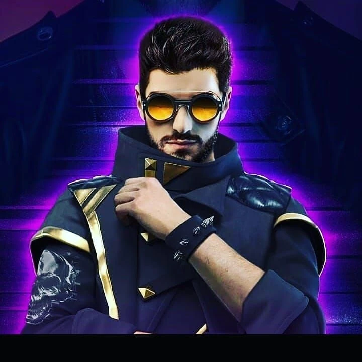
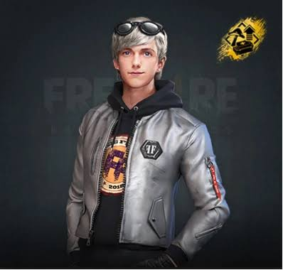
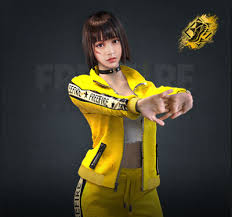

free fire
.png)
Garena Free Fire is a free-to-play mobile battle royale game developed and published by Garena. Released in December 2017, the game drops up to 50 players onto a remote island where they search for weapons, vehicles, and supplies while fighting to be the last person or team standing. Matches are designed to be fast-paced, lasting about 10 minutes. Alongside classic battle royale modes, it features 4v4 Clash Squad matches, a wide roster of playable characters with unique skills, and regular global collaborations—such as its crossover with Naruto Shippuden.
Alok

Alok is a popular active character in Garena Free Fire, modeled after the real-life Brazilian DJ and record producer Alok Achkar Peres Petrillo. Character Profile • Real-life Inspiration: Based on DJ Alok (born August 26, 1991). • Role / Occupation: World-famous DJ. • Cost: Available for 599 Diamonds or 20,000 Gold Coins. Ability: Drop the Beat / Party Remix • Active Skill: Creates a 5-meter aura around the player that lasts for 10 seconds. • Movement Speed: Increases sprint and movement speed by 10% to 15%. • Healing Effect: Restores 3 to 5 HP per second inside the aura (totaling up to 50 HP). • Cooldown: 45 to 50 seconds. • Awakened / Party Remix Feature: While the aura is active, it drops musical notes every 2 seconds (lasting 5 seconds) 2 meters behind the user; teammates who pick up the notes gain the same aura effect.
Maxim

Maxim is a 17-year-old character in Garena Free Fire known for his speed-eating skill and cheerful personality. Character Details • Age & Birthday: 17 years old, born on November 30. • Occupation: High school student and part-time mukbang v-tuber. • Relation: He is the brother of Misha and friend/schoolmate of Kelly. • Cost: Available in the in-game store for 499 diamonds or 8,000 gold. Special Ability: Gluttony • Effect: Reduces the time it takes to eat mushrooms and use medkits. • Progression: Healing and consumption speed increase with level tiers (ranging from a 5% reduction at level 1 up to a 25% reduction at max level in standard setups). • Role: Ideal for beginners as it makes healing faster and less stressful during intense firefights.
Kelly

Kelly (also known as Shimada Kiriko) is one of the most popular original female characters in the mobile battle royale game Garena Free Fire. Character Profile • Real Name: Shimada Kiriko • Age: 17 years old • Birthday: April 1 • Occupation: High-school track runner and sprinter • Family: Stepfather Andrew, adoptive mother Rena • Cost: 199 diamonds or 2,000 gold coins Abilities & Skills • Base Skill (Deadly Velocity / Dash): Increases your sprinting speed by 1% at level 1 up to 6% at level 6. • Awakened Skill (Deadly Speed): Unlocks after completing Awakening missions. After sprinting for 4 seconds, the first shot on a target deals 101% to 106% increased damage for 5 seconds. Why Players Use Kelly • Fast Rotations: Her extra sprinting speed helps you rush loot zones, dodge early-game enemies, and escape the shrinking safe zone. • Aggressive Plays: The damage boost from her awakened form makes her effective for hit-and-run gunfights and sniper/rifle openings. Would you like to know how to complete Kelly's Awakening missions, or do you want a recommendation for the best character skill combinations to pair with her? • YouTube How To Use Kelly Character In Free Fire - YouTube • Free Fire Wiki | Fandom Kelly | Free Fire Wiki | Fandom Show all